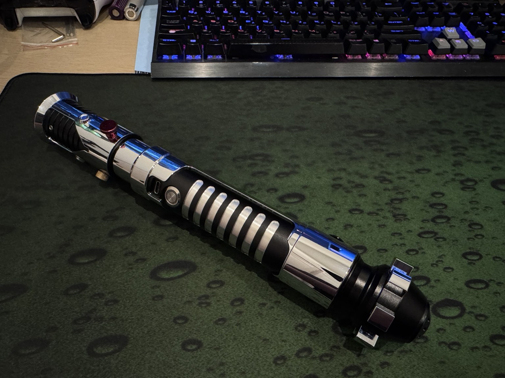
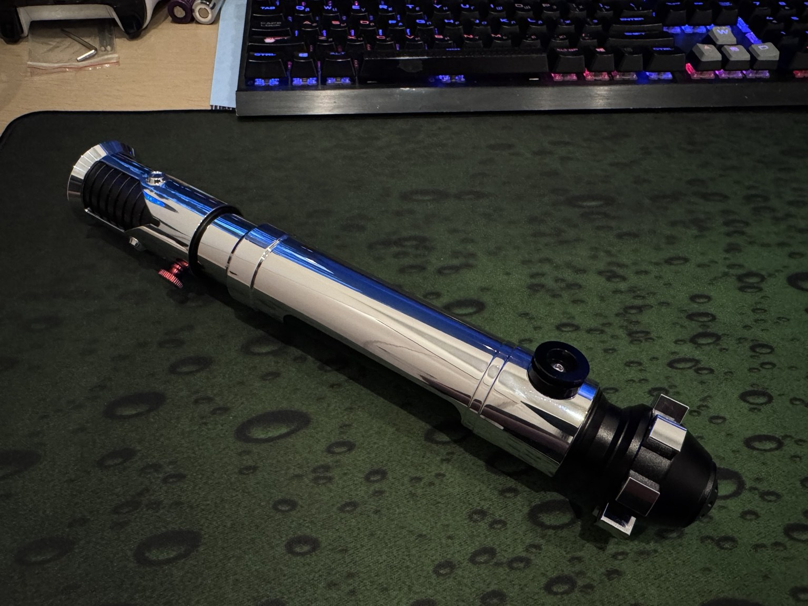
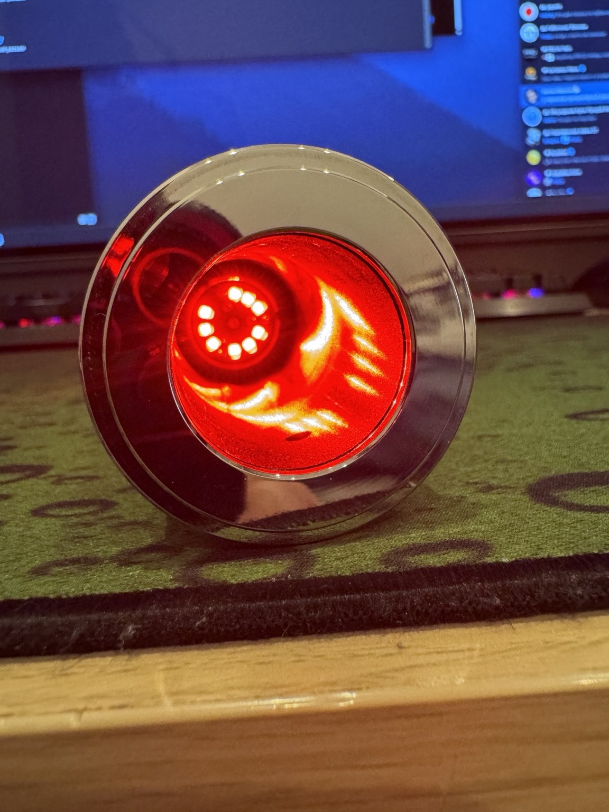

新しい冒険：Obi-Wan Kenobi Episode I + Xenopixel



新しい冒険。今回も「不動」とされたライトセーバーだが、入手先はMercari。価格は18,000円と前回より高かったものの、かなり新しく、ヒルト自体もあまり見かけないタイプだった。
今回はハードウェア故障ではなく、ソフトウェア／設定側の問題。電子回路そのものは生きており、設定を整えることで復帰した。
ヒルト：Obi-Wan Kenobi Episode I / The Phantom Menace · メーカー表記なし。構造からLGT / Nexus SabersのOWK TPM系である可能性が高い · サウンドボード：Xenopixel
Xenopixel 動作動画
プレーヤーが表示されない場合は、YouTubeで動画を開く